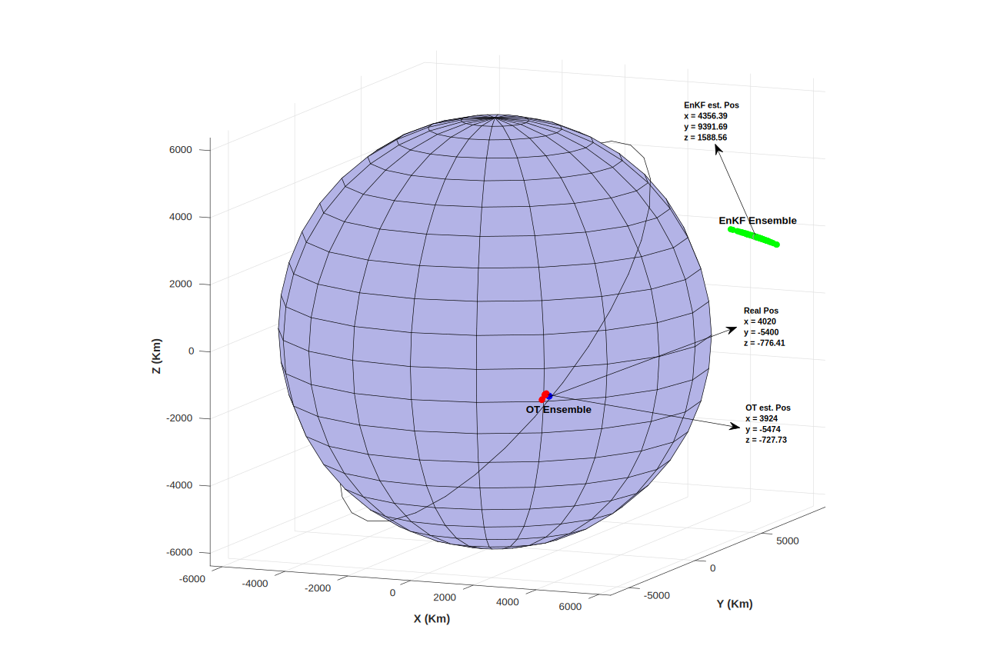

Privacy and Utility in Data sharing for State Estimation
Publications:
[Journal] N. Das, R. Bhattacharya, "Privacy and Utility Aware Data Sharing for Space Situational Awareness from Ensemble and Unscented Kalman Filtering Perspective.“ IEEE Transactions on Aerospace and Electronic Systems (Submitted, 2019)(arXiv)
Sensor Architecture Design
Sensors are in integral part of a system, providing knowledge about system states, through state
filtering, which can further be utilized to control the system. The problem of sensor design addresses questions
regarding, \(\color{red}{{}^1}\)which type of sensors do we need, \(\color{red}{{}^2}\)how accurate sensors do we need, and \(\color{red}{{}^3}\)when and where do we use
them for a particular type of filtering scheme.
Applications:
Flow Estimation, Sensor Scheduling for Communication Networks, Power Grid, Distributed sensing for Swarm Robots etc.
Publications:
Situational Awareness
Space Situational Awareness
Space situational awareness (SSA) refers to the ability to view, understand and predict the
physical location of natural and manmade objects in orbit around the Earth. Our research leverages upon a non-linear filtering technique known as Optimal Transport filter, to provide better probabilistic information about states of each of those space objects.
Publications:
[Journal] N. Das, R. P. Ghosh, N. Guha , R. Bhattacharya, B. Mallick, "Optimal Transport Based Tracking of Space Objects in Cylindrical Manifolds.", The Journal of the Astronautical Sciences ( Accepted, 2019)(Preprint) (Paper).
[Journal] N. Das, V. Deshpande, R. Bhattacharya, " Optimal Transport based Tracking of Space Objects using Range Data from a Single Ranging Station. ", Journal of Guidance, Control, and Dynamics (Accepted, 2019)(Preprint).
Fundings:
Cloud Computing Based Robust Space Situational Awareness (2015-2018), PI: Raktim Bhattacharya, Co-PI: Bani Mallick. AFOSR DDDAS grant FA9550-15-1-0071, with Dr. Erik Blasch as the program manager
Adaptive Markov Inference Game Optimization (AMIGO) for Rapid Discovery of Evasive Satellite Behaviors (2018) PI: Raktim Bhattacharya. AFRL project with Intelligent Fusion Technology, Inc and other partners.

Counter Small Unmanned Aircraft System
MD5, in collaboration with Army Futures Command, hosted A Hack of the Drones 2018 at Capital Factory in downtown Austin, TX from September 28 – 30, 2018. The A-Team, of which I was a part of, worked on detection of sUAS which is not actively broadcasting or communicating, was among the three winners.
Modeling, Control, and Imitation Learning
Publications:
[Conference] N.Das, R. Prakash, L. Behera "Learning Object Manipulation from Demonstration through Vision for the 7-DOF Barrett WAM.", 2016 IEEE First International Conference on Control, Measurement and Instrumentation (CMI), 8-10 Jan. 2016. (link)
[Conference] N.Das, S. Dutta, S. Reddy, L. Behera "A probabilistic framework of learning movement primitives from unstructured demonstrations.", 2015 IEEE 13th International Conference on Industrial Informatics (INDIN), 22-24 July 2015. (link)
[Conference] A.Mitra, N.Das, R. Samant, L. Behera "Control of a 4 DoF Barrett WAM robot — Modeling, control synthesis and experimental validation.", 2015 IEEE 13th International Conference on Industrial Informatics (INDIN), 22-24 July 2015. (link)
|